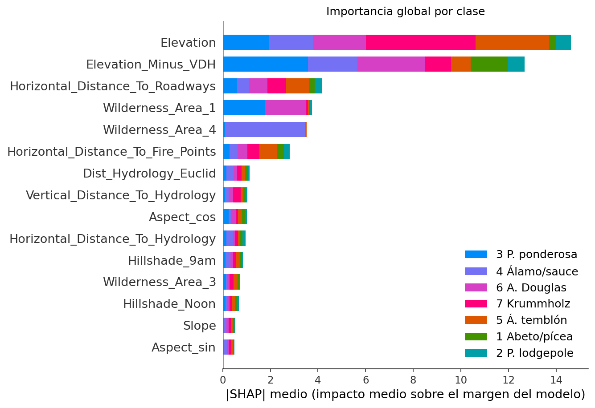
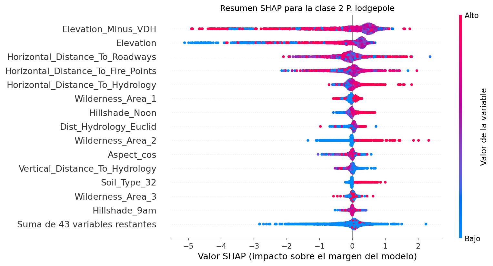
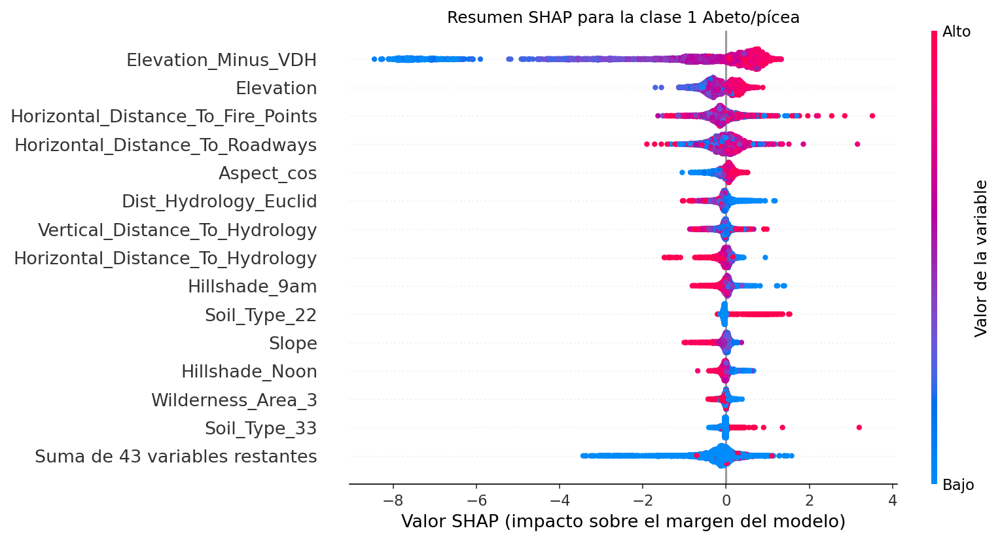
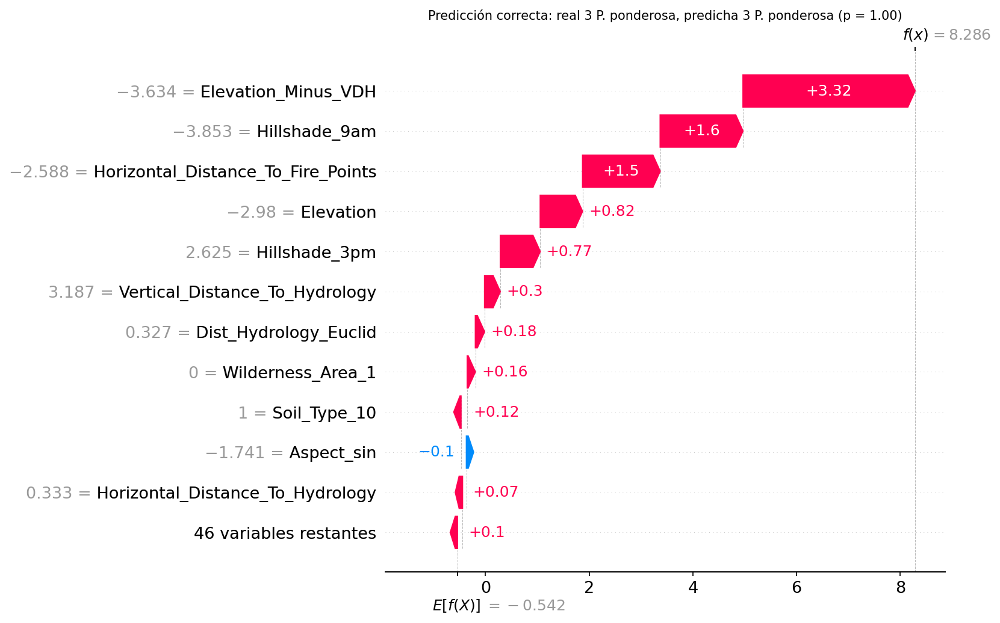
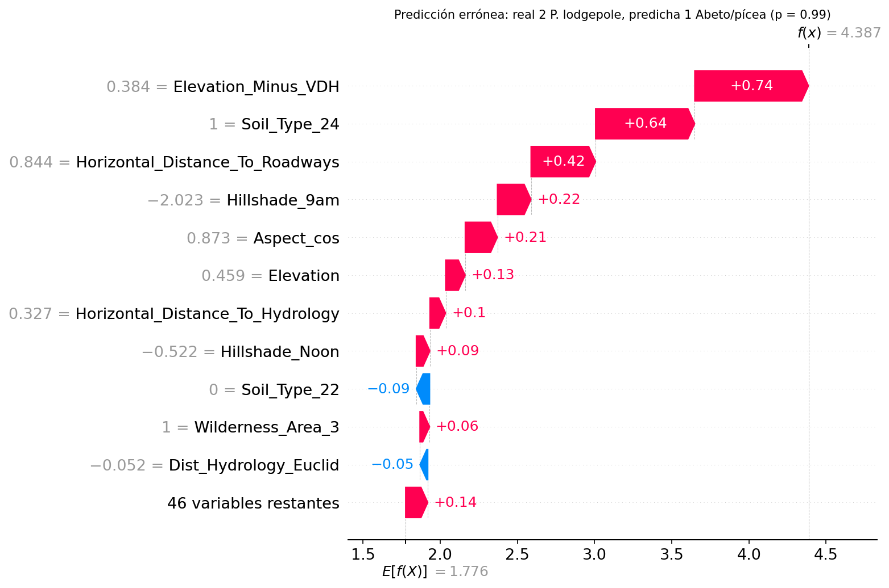

8. Interpretabilidad del modelo finalista#
La regresión logística de la Parte I se interpretó directamente a partir de sus coeficientes (sección 3.10). El finalista, un conjunto de 1.400 árboles de boosting (200 iteraciones × 7 clases), no admite esa lectura. Su interpretación se basa en los valores de Shapley [Lundberg and Lee, 2017], procedentes de la teoría de juegos cooperativos. Para cada observación, SHAP reparte la diferencia entre la predicción del modelo y su predicción media entre las variables, y es el único método de atribución aditiva que satisface simultáneamente tres propiedades:
Eficiencia: la suma de las contribuciones de todas las variables es exactamente igual a la diferencia entre la predicción de la observación y la predicción media.
Simetría: dos variables que aportan lo mismo en todas las coaliciones reciben la misma contribución.
Aditividad: la contribución de una variable a un modelo formado por la suma de dos modelos es la suma de sus contribuciones a cada uno, lo que permite descomponer de forma coherente un conjunto de árboles.
Los valores se calcularon con TreeExplainer [Lundberg et al., 2020], que obtiene los valores
de Shapley exactos para modelos de árboles en tiempo polinómico, sobre una muestra
aleatoria de 3.000 celdas de la prueba reservada. Las contribuciones se expresan en la
escala del margen del modelo (logaritmo de las odds de cada clase) y las variables
continuas, en unidades estandarizadas.
Mostrar código
import json
import sys
from pathlib import Path
import numpy as np
import pandas as pd
sys.path.insert(0, str(Path.cwd().parent / "scripts"))
import _utils3 as u3
RESULTS3 = Path.cwd().parent / "resultados"
8.1 Interpretabilidad global#


Figura 1 Importancia global de las 15 variables más relevantes, medida como el valor absoluto medio de SHAP y desagregada por clase.#
Mostrar código
imp = pd.read_csv(RESULTS3 / "shap_importancia_global_muestra.csv", index_col=0, encoding="utf-8-sig")
imp = imp["importancia_media_abs"]
tabla_imp = pd.DataFrame({"|SHAP| medio (suma sobre clases)": imp,
"Proporción del total (%)": 100 * imp / imp.sum()}).head(10)
tabla_imp.index.name = "Variable"
display(tabla_imp.round(2))
| Variable | |SHAP| medio (suma sobre clases) | Proporción del total (%) |
|---|---|---|
| Elevation | 14.63 | 27.16 |
| Elevation_Minus_VDH | 12.68 | 23.54 |
| Horizontal_Distance_To_Roadways | 4.16 | 7.72 |
| Wilderness_Area_1 | 3.75 | 6.96 |
| Wilderness_Area_4 | 3.53 | 6.55 |
| Horizontal_Distance_To_Fire_Points | 2.81 | 5.22 |
| Dist_Hydrology_Euclid | 1.14 | 2.11 |
| Vertical_Distance_To_Hydrology | 1.03 | 1.91 |
| Aspect_cos | 1.01 | 1.87 |
| Horizontal_Distance_To_Hydrology | 0.95 | 1.77 |
La importancia global confirma, con un modelo de naturaleza completamente distinta, los hallazgos de la Parte I:
La elevación domina el problema. La elevación y la elevación relativa a la fuente de agua más cercana (
Elevation_Minus_VDH, construida en la sección 2.9) concentran el 51 % de la importancia total. Ambas codifican el gradiente altitudinal de la vegetación de montaña, que la regresión logística también identificó como su efecto principal (sección 3.10). La coincidencia entre un modelo lineal y un conjunto de árboles indica que se trata de una propiedad del fenómeno y no de un artefacto del modelo.La importancia se reparte entre variables redundantes. La elevación absoluta y la relativa están casi perfectamente correlacionadas, y SHAP distribuye entre ambas el crédito del gradiente altitudinal. Su importancia debe leerse de forma conjunta.
El área silvestre actúa como proxy geográfico.
Wilderness_Area_4(Cache la Poudre) es la variable más importante para el álamo/sauce, la clase que solo existe en esa área, yWilderness_Area_1(Rawah) es decisiva para el pino ponderosa y el abeto de Douglas, que nunca aparecen en ella. Este patrón coincide con el proxy geográfico identificado en la auditoría de fuga (sección 2.5) y explica la pérdida de desempeño en áreas no vistas (sección 9.4).Las distancias a carreteras y a puntos de incendio ocupan el tercer y el sexto lugar. Su relación con la cobertura es indirecta: las carreteras y los incendios históricos se concentran en los valles, donde predominan las clases de zonas bajas.


Figura 2 Gráfico de resumen SHAP para el pino lodgepole. Cada punto es una celda de la muestra; su posición horizontal indica la contribución de la variable a la clase, y su color, el valor de la variable.#


Figura 3 Gráfico de resumen SHAP para el abeto/pícea.#
Los gráficos de resumen de las dos clases mayoritarias, que concentran los errores del
modelo, muestran cómo actúa cada variable. Para el abeto/pícea, los valores bajos de
Elevation_Minus_VDH producen contribuciones fuertemente negativas (hasta −8 en el margen),
mientras que los valores altos producen contribuciones positivas moderadas: la elevación
funciona como un criterio de exclusión en las zonas bajas más que como un criterio de
inclusión en las altas. Para el pino lodgepole, en cambio, tanto los valores muy bajos como
los muy altos de elevación reducen la probabilidad de la clase, lo que refleja su posición
intermedia en el gradiente. Esta relación no monótona es precisamente la que un modelo
lineal no puede representar y explica la mayor parte de la mejora del finalista. También
son visibles efectos específicos de suelo, como el del tipo 22, asociado de forma
positiva al abeto/pícea.
8.2 Interpretabilidad local#
Se explican dos celdas de la muestra: la predicción correcta con mayor confianza y el error con mayor confianza, que es el caso más informativo para el diagnóstico.


Figura 4 Explicación local de una celda de pino ponderosa clasificada correctamente con probabilidad 1,00. \(E[f(X)]\) es el margen medio de la clase y \(f(x)\), el margen de la observación.#


Figura 5 Explicación local de una celda de pino lodgepole clasificada como abeto/pícea con probabilidad 0,99.#
Predicción correcta. La celda de pino ponderosa tiene una elevación relativa muy baja (3,6 desviaciones estándar por debajo de la media), está cerca de puntos de incendio históricos y tiene un sombreado matutino bajo, propio de una ladera orientada al oeste. Las tres variables empujan en la misma dirección y elevan el margen de la clase de −0,54 a 8,29, lo que corresponde al perfil ecológico típico del pino ponderosa: laderas bajas, secas y expuestas, en los valles donde se concentra el fuego.
Error. La celda de pino lodgepole clasificada como abeto/pícea está ligeramente por encima de la elevación relativa media (+0,38 desviaciones estándar), pertenece al suelo 24 y está alejada de las carreteras. Cada una de estas condiciones es individualmente compatible con ambas clases, y juntas desplazan el margen del abeto/pícea de 1,78 a 4,39. Ninguna variable aporta una evidencia en contra comparable. El error se produce en la zona de solapamiento entre las dos clases mayoritarias que la Parte I identificó en todas las variables (sección 2.3) y que también es la principal fuente de confusión del finalista (sección 5.6). Se trata de una celda cuyo perfil cartográfico corresponde a un rodal de abeto/pícea, probablemente en la transición entre ambos tipos de bosque, más que de un fallo del modelo atribuible a una variable concreta.
8.3 SHAP frente a LIME#
LIME [Ribeiro et al., 2016] explica una predicción ajustando un modelo lineal local: perturba la observación, consulta al modelo en los puntos perturbados y pondera cada punto según su cercanía a la observación original. Su explicación es tan fiable como la aproximación lineal en esa vecindad. SHAP, en cambio, no ajusta un modelo sustituto: calcula la contribución de cada variable promediando sobre todas las coaliciones posibles, lo que garantiza las propiedades de eficiencia, simetría y aditividad. Para comparar ambos métodos se aplicó LIME a las mismas dos celdas, con 5.000 perturbaciones y discretización de las variables continuas.
Mostrar código
with open(RESULTS3 / "shap_lime_casos.json", encoding="utf-8") as f:
sl = json.load(f)
filas = []
for etiqueta, caso in sl.items():
filas.append({"Caso": "Predicción correcta" if etiqueta == "correcta" else "Error",
"Clase real → predicha": f"{u3.CLASS_SHORT[caso['clase_real']]} → {u3.CLASS_SHORT[caso['clase_predicha']]}",
"5 variables principales (SHAP)": ", ".join(caso["top5_shap"]),
"5 variables principales (LIME)": ", ".join(caso["top5_lime"]),
"Variables en común": len(caso["comunes_top5"]),
"R² local de LIME": round(caso["lime_r2_local"], 3)})
display(pd.DataFrame(filas).set_index("Caso"))
| Caso | Clase real → predicha | 5 variables principales (SHAP) | 5 variables principales (LIME) | Variables en común | R² local de LIME |
|---|---|---|---|---|---|
| Predicción correcta | 3 P. ponderosa → 3 P. ponderosa | Elevation_Minus_VDH, Hillshade_9am, Horizontal_Distance_To_Fire_Points, Elevation, Hillshade_3pm | Soil_Type_9, Elevation_Minus_VDH, Elevation, Wilderness_Area_1, Soil_Type_14 | 2 | 0.115 |
| Error | 2 P. lodgepole → 1 Abeto/pícea | Elevation_Minus_VDH, Soil_Type_24, Horizontal_Distance_To_Roadways, Hillshade_9am, Aspect_cos | Soil_Type_27, Soil_Type_7, Soil_Type_21, Soil_Type_2, Soil_Type_3 | 0 | 0.075 |
Las dos técnicas coinciden solo parcialmente. En la predicción correcta comparten dos de las cinco variables principales, las dos medidas de elevación, que son también las que dominan la importancia global. En el error no comparten ninguna: las cinco variables con mayor peso en LIME son indicadoras de tipos de suelo poco frecuentes (27, 7, 21, 2 y 3), ninguna de las cuales caracteriza a la celda explicada. El \(R^2\) local de LIME es bajo en ambos casos (0,11 y 0,08), lo que indica que el modelo lineal sustituto reproduce mal el comportamiento del finalista en esas vecindades.
La divergencia tiene una causa identificable. Al perturbar la observación, LIME activa y desactiva de forma independiente las 40 indicadoras de suelo y genera celdas con combinaciones de suelo, área y elevación que no existen en los datos. El finalista responde a esas combinaciones atípicas con cambios grandes de probabilidad, y LIME atribuye esos cambios a los suelos perturbados aunque no intervengan en la predicción real. SHAP, que solo recorre caminos observados en los árboles, no presenta este problema.
Las dos técnicas divergen, en general, en tres situaciones:
Interacciones fuertes entre variables. Cuando el efecto de una variable depende de otra (por ejemplo, el de la elevación según el área silvestre, sección 2.7), el modelo lineal de LIME no puede representar la interacción y atribuye su efecto de forma parcial a una de las variables. SHAP reparte la contribución de la interacción entre las variables implicadas.
Fronteras de decisión escalonadas. En los modelos de árboles la función de decisión es constante a trozos. Si la vecindad de perturbación de LIME cruza uno de esos escalones, la aproximación lineal pierde precisión, lo que se refleja en un \(R^2\) local bajo.
Variables correlacionadas. LIME perturba cada variable de forma independiente y genera combinaciones poco realistas (por ejemplo, una elevación absoluta alta con una elevación relativa baja), mientras que
TreeExplainersigue los caminos de los árboles condicionados a los datos de entrenamiento. Con variables redundantes, como las dos elevaciones o los tres índices de sombreado (sección 2.3), LIME tiende a concentrar el peso en una sola de ellas.
Por estas razones, en este estudio SHAP se considera la explicación de referencia y LIME una verificación complementaria cuya fiabilidad depende de su \(R^2\) local.
8.4 Alcance de la interpretación#
Las atribuciones SHAP describen el comportamiento del modelo, no relaciones causales en el ecosistema. Cuando dos variables están correlacionadas, la importancia se reparte entre ellas y la importancia de cada una por separado subestima su relevancia conjunta. Además, los valores se calcularon sobre una muestra de 3.000 celdas de la prueba reservada por costo computacional. El orden de las seis variables más importantes coincide exactamente con el obtenido en un cálculo independiente sobre otra muestra aleatoria de 2.000 celdas, lo que indica que el tamaño de la muestra es suficiente para estabilizar la importancia global.